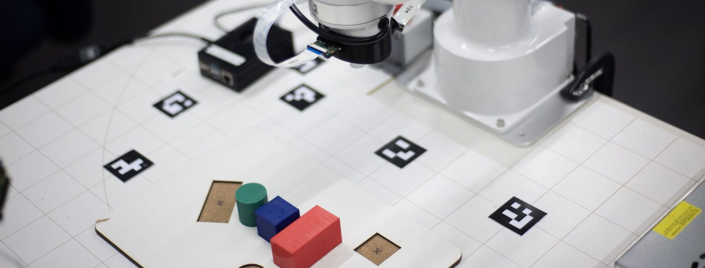

Setup-Guide · Inbetriebnahme
Arbeitsplatz xArm Lite 6 einrichten Vom Karton zur Abnahme.
Vom Auspacken bis zur ersten sicheren Bewegung: Hardware, Ubuntu 22.04, ROS 2 Humble, Workspace, Netzwerk, Zusatzmodule und Abnahme. Jeden Schritt abhaken; die Häkchen bleiben in diesem Browser gespeichert.
- FAKE zuerstkeine Bewegung beim Prüfen
- Drucken / PDFalle Phasen ausgeklappt
- 2 Einstiegevorinstalliert oder selbst

Zeiger bewegen: der Arm folgt · ziehen zum DrehenZiehen zum Drehen
Einstieg wählen
Sicherheit: alles zuerst in FAKE prüfen (keine Roboterbewegung). Erst danach REAL – mit freiem Arbeitsraum, niedrigem Tempo und dem Not-Aus in Reichweite.
0 %
Vom Karton zur Abnahme
1Lieferumfang prüfen
- Mikrofon, Touch-Display und IP-Kameras: Modell frei wählbar; das Touch-Display muss als normales USB-Touch-Gerät laufen.
2Aufbau & Verkabelung
3Ubuntu-Grundsystem
sudo apt update && sudo apt full-upgrade -y sudo apt install -y git curl wget zstd openssl python3-pip
- Secure Boot an? Die Installation fragt ein Passwort ab. Nach dem Neustart im blauen Bildschirm Enroll MOK wählen und dasselbe Passwort eingeben – sonst lädt der Treiber nicht und
sudo ubuntu-drivers install sudo reboot nvidia-smi
nvidia-smimeldet einen Fehler. sudo sed -i 's/^#\?WaylandEnable=.*/WaylandEnable=false/' /etc/gdm3/custom.conf sudo reboot echo $XDG_SESSION_TYPE
nmcli device status sudo nmcli con add type ethernet ifname <anschluss> con-name xarm ipv4.method manual ipv4.addresses 192.168.1.xxx/24 ipv6.method disabled sudo nmcli con up xarm ping -c 3 192.168.1.xxx
4ROS 2 Humble
sudo apt install -y locales software-properties-common sudo locale-gen en_US en_US.UTF-8 sudo update-locale LC_ALL=en_US.UTF-8 LANG=en_US.UTF-8 sudo add-apt-repository -y universe export ROS_APT_SOURCE_VERSION=$(curl -s https://api.github.com/repos/ros-infrastructure/ros-apt-source/releases/latest | grep -F "tag_name" | awk -F\" '{print $4}') curl -L -o /tmp/ros2-apt-source.deb "https://github.com/ros-infrastructure/ros-apt-source/releases/download/${ROS_APT_SOURCE_VERSION}/ros2-apt-source_${ROS_APT_SOURCE_VERSION}.$(. /etc/os-release && echo $VERSION_CODENAME)_all.deb" sudo dpkg -i /tmp/ros2-apt-source.debsudo apt update sudo apt install -y ros-humble-desktop ros-humble-rmw-cyclonedds-cpp python3-colcon-common-extensions python3-rosdep
sudo apt install -y ros-humble-moveit ros-humble-moveit-servo ros-humble-joy ros-humble-teleop-twist-joy \ ros-humble-rosbridge-suite ros-humble-cv-bridge ros-humble-rviz-2d-overlay-plugins ros-humble-rviz-2d-overlay-msgs \ ros-humble-point-cloud-transport ros-humble-octomap-server sudo apt install -y python3-pyaudio portaudio19-dev python3-pyqt5.qtwebengine python3-opencv python3-av gir1.2-webkit2-4.0
sudo rosdep init && rosdep update
5Workspace, CUDA/ZED, Build
git clone --recursive <repo-url> ~/dev_ws
pip install "numpy<2" "scipy>=1.8" pygame==2.6.1 PyAudio==0.2.14 "Flask>=2.2" "PyQt5>=5.15.6" mss==10.2.0 "opencv-python>=4.9" "ultralytics>=8.0"
- Kein neueres ZED SDK installieren: der Wrapper im Repo (4.1.0) baut nur mit SDK 4.1.x.
source /opt/ros/humble/setup.bash bash ~/dev_ws/tools/install_zed.sh sudo chmod -R a+rX /usr/local/lib/python3.10/dist-packages/
mkdir -p ~/.cache/whisper.cpp && wget -O ~/.cache/whisper.cpp/ggml-small.bin https://huggingface.co/ggerganov/whisper.cpp/resolve/main/ggml-small.bin
cd ~/dev_ws && rosdep install --from-paths src --ignore-src -r -y colcon build --symlink-install 2>&1 | tail -20
6Umgebung & Netzwerk
source /opt/ros/humble/setup.bash source ~/dev_ws/install/setup.bash export RMW_IMPLEMENTATION=rmw_cyclonedds_cpp export ROS_DOMAIN_ID=66 export ROS_LOCALHOST_ONLY=0 export PATH=/usr/local/cuda-12.1/bin${PATH:+:${PATH}} export LD_LIBRARY_PATH=/usr/local/cuda-12.1/lib64${LD_LIBRARY_PATH:+:${LD_LIBRARY_PATH}} [ -f "$HOME/dev_ws/ros2_nexus/cyclonedds.xml" ] && export CYCLONEDDS_URI="file://$HOME/dev_ws/ros2_nexus/cyclonedds.xml"sudo bash -c 'cat > /etc/systemd/system/lo-multicast.service <<EOF [Unit] Description=Enable Multicast on Loopback interface for ROS 2 After=network.target [Service] Type=oneshot ExecStart=/sbin/ip link set lo multicast on [Install] WantedBy=multi-user.target EOF' sudo systemctl daemon-reload && sudo systemctl enable --now lo-multicast.service
echo -e "net.core.rmem_max=2147483647\nnet.core.rmem_default=2147483647\nnet.core.wmem_max=2147483647\nnet.core.wmem_default=2147483647" | sudo tee /etc/sysctl.d/60-cyclonedds.conf sudo sysctl -p /etc/sysctl.d/60-cyclonedds.conf
nano ~/dev_ws/config/network.yaml python3 ~/dev_ws/tools/check_ports.py
- Eine neue Roboter-Adresse auch in
http://192.168.1.xxx:18333
network.yaml(robot.ip) eintragen; sie muss zur festen Adresse von Anschluss 2 passen. - Anderes Heimnetz (nicht
~/dev_ws/tools/firewall_setup.sh ~/dev_ws/tools/firewall_setup.sh --apply
192.168.0.0/24)? Mit--net <CIDR>ergänzen; bei Problemen--undo.
7Apps & Zusatzmodule
cd ~/dev_ws/ros2_nexus && bash install_app.sh
bash ~/dev_ws/touch_panel/touch_panel_start.sh --install
bash ~/dev_ws/src/vla_bridge/scripts/install_ollama.sh
adb reverse tcp:8443 tcp:8443 && adb reverse tcp:9091 tcp:9091 # in der Brille: https://localhost:8443
8Erster Start & Abnahme
~/dev_ws/ros2_nexus/ros2_nexus_web_start.sh
python3 ~/dev_ws/tools/grasp_e2e.py --quick
Etwas schlägt fehl? Der Check nennt je Zeile Ursache und Abhilfe; mehr im Handbuch und in den FAQ von running.md.